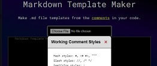

KB
A simple document management repo project to be referenced from Prometheus or other monitoring projects.
Empower people. Simplify systems. Let technology handle the rest.
A simple document management repo project to be referenced from Prometheus or other monitoring projects.
Created the project page for the palindrome team at 101101. They use this page to showcase their work.
Developed a new, more responsive website for the owner of Long-Thanh; a Vietnamese restaurant in Indianapolis, with amazing Pho.

Web-app that can be used to create markdown template files (.md) from your code, to improve documentation of code, services, products, etc...
I'm a passionate, innovative, and determined person, on a journey of continuous learning.
VP-level technology leader with over twenty years of diverse industry experience. I'm an expert in driving automation, AI adoption, and digital transformation that delivers measurable efficiency, cost savings, and security improvements. Previously led IT functions at 120Water, IronCircle, Rolls-Royce, and KAR Global.
Aligning technology roadmaps with business objectives, managing multi-million dollar budgets, and establishing frameworks for scalable growth.
Building security-first cultures, navigating StateRAMP/HITRUST/SOC II, and protecting critical infrastructure while enabling innovation.
Leveraging AI, automation, and cloud-native architectures to modernize operations and reduce technical debt.
Using data-driven insights to predict outages, forecast capacity needs, and validate investment decisions.
Treating repeatable processes as code — automating early, iterating continuously, eliminating toil.
From Terraform to Python scripts, hands-on technical depth informs better architectural decisions.
"Courage is a kind of salvation" – Plato
I selected this quote because it reminds me that we must have courage in our hearts. Whether or not we would normally do something, we must, within us, hold the power to act and be willing to follow through with something, no matter how fearful we may be of the outcome.
I challenge you to step outside your comfort zone, live your life, face your fears, and accept greatness into your heart.